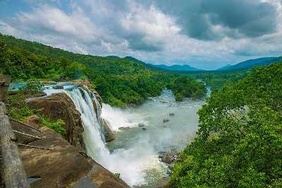

Athirapalli Water Falls
Charpa Falls

Vadakkumnathan Temple

Surrounded by mighty hills, forests and waterfalls in the East, beaches and backwaters in the west and a vibrant culture and heritage, the cultural capital of Kerala is located almost in the central part of God’s Own Country. With a heritage that blends past spirituality and tradition with the rush of the modern, it is a destination waiting to be unraveled. History